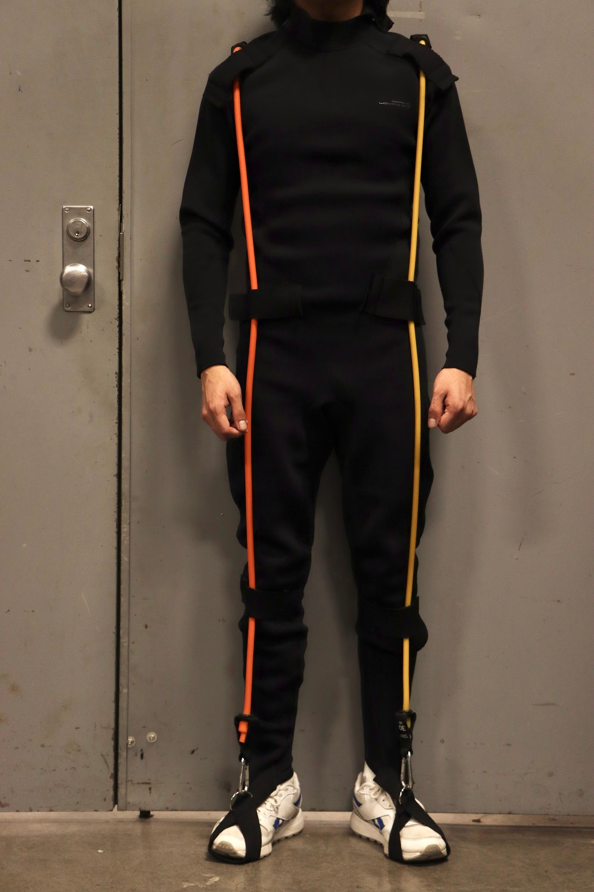
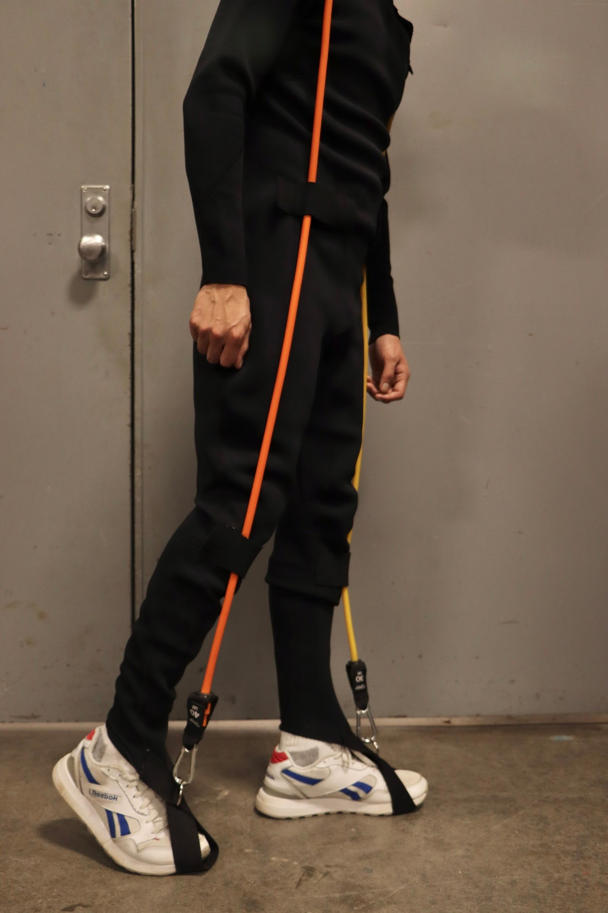
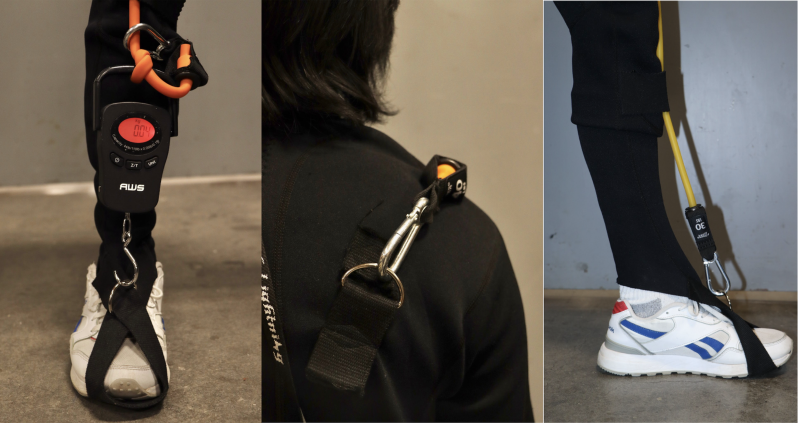
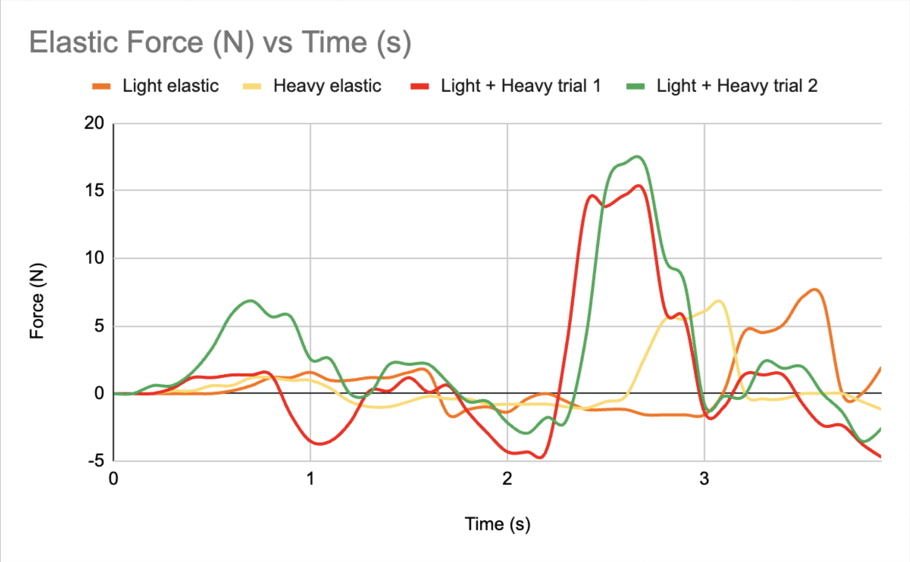

One hidden but significant challenge astronauts face in NASA's current Extravehicular Mobility Unit (EMU) is gas-pressurization, which causes resistive joint torques that fight against natural movement — leading to fatigue, reduced efficiency, and increased injury risk during planetary missions.
As joint mobility becomes a top priority for next-generation space suit design, this project explores a passive solution: an exoskeleton informed by a kinematic model of astronaut gait, with a focus on knee articulation. By incorporating a passive assistive mechanism that engages during the high-resistance phases of the gait cycle, the design aims to reduce metabolic costs without adding the weight, complexity, or power requirements of an active system. This work was presented at the NASA Space Grant Consortium.
See Our Poster!Design Requirements
Must be compatible with the current EMU envelope and the liquid cooling and ventilation garment.
Add no additional energy requirement to the suit.
Must be able to overcome at least half of the torque (~5 N·m).
Prototype Design
The prototype is based on a full-body neoprene wetsuit, chosen to satisfy the compressive fit and thickness constraints of the Liquid Cooling and Ventilation Garment (LCVG) worn beneath the actual EMU. Drawing inspiration from athletic tech suits used by swimmers, which use elastic textiles to compress muscles and stimulate bloodflow during movement, the neoprene suit served as a wearable, flexible base layer onto which the assistive mechanism could be mounted, without altering the suit's overall envelope or adding bulk.


Elastic resistance bands were mounted parallel to the primary axis of force at the knee joint, positioned to engage during the high-resistance phases of the gait cycle. The goal was for the bands to store energy from efficient muscle groups during certain phases of movement and release that energy to assist less efficient muscles during others, effectively redistributing mechanical work across the gait cycle. Bands were designed to be easily interchangeable, allowing different elasticity levels (characterized by their spring constant, K) to be tested and compared against the target assistive torque.
To evaluate the prototype's performance, a foot-and-knee harness was developed to isolate and measure the force generated by the elastic bands during simulated movement. One end of the elastic band was anchored at the hip using a belt, while the other end connected to a force meter secured by the harness at the leg. This setup allowed controlled, repeatable measurement of force output as the leg moved through a range of motion, enabling direct comparison between different band configurations and providing the data needed to validate the prototype's assistive torque output.

Testing Strategy
To establish a baseline reference and identify materials capable of meeting the target assistive torque, we tested the spring constant of various elastic materials. Using the foot-and-knee harness, elastic bands were anchored at the hip and connected to a force meter at the leg, allowing force output to be measured as the leg moved through the gait cycle. Motion was recorded on camera alongside force meter readings taken at 0.10-second intervals, enabling force data to be synchronized with specific phases of the gait cycle. This approach allowed direct comparison between band configurations and provided the quantitative basis for evaluating the prototype's performance against the project's design requirements.

My Role
- Analyzed biomechanical loading in astronaut gait cycles using OpenSim gait models to identify target assistive torque values, directly informing the project's design requirements
- Conducted mechanical testing on the prototype to characterize material elasticity and quantify assistive torque output, validating the prototype against design targets
- Collaborated with teammates to develop prototype design and testing protocols, enabling repeatable, quantitative evaluation of prototype performance
Skills applied: biomechanical modeling (OpenSim), gait kinematic analysis, mechanical prototyping, material characterization, force testing, experimental protocol development, data acquisition and analysis